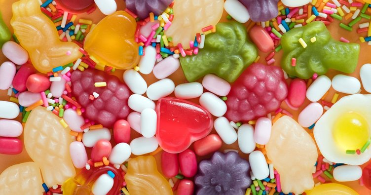

Şekerin faydaları ve zararları nelerdir? Normal şartlarda bir insanın günlük şeker ihtiyacı ne kadar?
Şeker insanların hayatının olmazsa olmaz bir maddesidir. Özellikle de çay içmeyi böyle çok seven bir ülkede şeker olmadan hayat olmaz. Gün içerisinde küçükten büyüğe herkes şeker tüketir. Şekerin tüketimi de akıllara birçok soru getirir. Mesela günde ne kadar şeker tüketilmelidir? Şeker tüketmenin zararları nelerdir? İşte tüm cevaplar...

Şeker tüketmek herkesin aklında zararlı bir şey gibi görünmektedir. Ancak insan bedeninin şekere de ihtiyacı vardır. O yüzden her gün şeker tüketmek gerekir. Ancak ne kadar tüketilmelidir? Şeker tüketmenin çocuğa zararları nelerdir? Şeker ile ilgili tüm detaylar bu yazıda toplanıyor...
Şekerin Faydaları
Şeker genellikle zararları ile bilinen bir besindir. Ancak aşırıya kaçılmadığı müddetçe şekerin de birçok faydası bulunmaktadır. Besleyici birçok mineral içeren şekerin faydaları şöyle sıralanır:
- Enerji verir.
- Düşük tansiyon problemini çözer.
- Doğal besin maddeleri ve mineraller içerir, bunlar da sağlık için çok yararlıdır.
- Beyin fonksiyonlarının çalışmasında yardım eder.
- Şeker depresyonu tedavi eder.
Şekerin Zararları
Şekerin faydaları ile zararları kıyaslandığında faydaları bir hiç olarak düşünülebilir. Şekerin çok fazla zararı vardır. Onlardan bazıları ise şunlardır:
- Cildin elastikliğini ve sıkılığını koruyan yapılara zarar vererek cildi kırıştırıyor.
- Yapılan araştırmalar sonucunda anlaşılıyor ki şeker tüketimi hafızayı zayıflatıyor. Aynı zamanda fazla şeker tüketimi dikkat bozukluğu ve öğrenme güçlüğüne de yol açıyor.
- Şeker tüketen bir kişi şeker tüketmeyen bir insana göre çok daha fazla kansere yakalanıyor.
- Dişlerin çürümesine yol açıyor.
- Şekerin en çok bilinen zararlarından birisi de kilo aldırmasıdır. Şeker tüketimi obeziteye yol açıyor.
Şekerin Kalorisi ve Besin Değeri
Şeker içinde bazı besin değerleri bulunur. Bu besin değerleri ise şöyledir:
- Karbonhidrat 88.8
- Potasyum
- Kalsiyum
- Demir
100 gramlık bir şekerde ise 403 kcal kalori bulunur.
İnsanın Günlük Şeker İhtiyacı Ne Kadardır?
Şeker tüketimi oldukça az olmalıdır ancak şimdi çoğu kişinin tüketmekte olduğu bir paket gıdanın içinde bile insanın günlük şeker ihtiyacının kat kat fazlası bulunmaktadır. Oysa şeker çok daha az kullanılması gereken bir besindir. Amerikan Kalp Derneği tarafından yayınlanan rakamlar şu şekildedir:
- Kadın 20 gram yani 100 kalori
- Erkek 35 gram yani 150 kalori
Bundan daha fazla şeker tüketimi zararlıdır. Ancak sadece bir kutu kolanın içinde bile kat kat fazla şeker bulunmaktadır.
Küp Şeker Mi Toz Şeker Mi?
Ülkemizde şekerin en fazla tüketildiği alan kesinlikle çaya atılan şekerdir. Aileler arasında ise küp şeker mi toz şeker mi diye bir tartışma vardır. Bazı insanlar her zaman küp şeker kullanırken bazıları da toz şeker kullanırlar. Peki hangisi daha iyidir?
- Toz şeker çay içerisine atıldığında çayın ısında bir değişiklik olmazken küp şeker çayı hızlıca soğutuyor.
- Toz şekerde bir kimyasal yokken küp şeker de şekeri küp haline sokmak için çeşitli maddeler kullanılmaktadır.
- Toz şeker her yerde kullanılabilen bir şeker türüdür. Örneğin kek yapmak için küp şeker kullanılamaz ancak toz şeker kullanılır.
Yukarıda verilen bazı maddeler ile toz şekerin daha iyi olduğu kanıtlanmaktadır. Ancak herkes kendi tercihine göre şekerini seçer. O yüzden bu konuda kesin bir şey söylemenin bir anlamı yoktur.
Şekerin Çocuğa Zararları
Şeker tüketmek yetişkine de çocuğa da zarar verir. Çocuklar da en çok bilinen şey şekerin dişlerini çürüttüğüdür. Bir çocuk çok fazla şeker tüketebilir. Bu tüketim ise kesinlikle çocuğun dişlerine zarar verir. Aynı zamanda çocuğun iştahını kapatır. Bu da çocukta zayıflama, kusma, sindirim bozuklukları gibi rahatsızlıklara yol açar.
Şekerin Cilde Zararları
Şekerin her şeye olduğu gibi cilde de zararları vardır. Cilde olan en büyük zararı ise cildi yaşlandırmasıdır. Çok tüketildiğinde ciltte kırışıklıklara yol açar. Aynı zamanda fazla şeker tüketimi sivilceye de neden olur. Bu durum oldukça sinir bozucudur.
Hamilelikte Şeker Yüklemesi
Hamile annelere şeker yükleme testleri 24 ve 28 haftaları arasında yapılır. Yapılan bu testte anne adayına 50 gr glikoz içirilir. Bir saat sonra da kandaki glikoz seviyesi ölçülür. Bu oranın tespiti esnasında glikoz seviyesi 140 mg altında olan anne adayında gebelik şekeri olmadığı belirlenir.